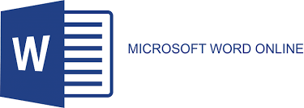

2. Microsoft Word Online


Microsoft Word Online คือเวอร์ชันออนไลน์ของ Word ที่คุ้นเคย ผู้ใช้สามารถเปิดไฟล์ Word จาก OneDrive และทำงานร่วมกันได้แบบเรียลไทม์ พร้อมคอมเมนต์และติดตามการเปลี่ยนแปลง เหมาะสำหรับผู้ที่เคยใช้ Microsoft Office มาก่อน
จุดเด่น - หน้าตาและฟีเจอร์คล้าย Word รุ่นติดตั้ง เหมาะกับงานทางการ
ข้อดี
✅ ใช้งานฟรีผ่านบัญชี Microsoft
✅ รองรับไฟล์ .docx เต็มรูปแบบ
✅ เหมาะกับการเขียนเอกสารทางราชการ
ข้อเสีย
❌ ต้องสมัครบัญชี Microsoft
❌ ฟีเจอร์บางอย่างยังไม่เท่า Word บนเดสก์ท็อป